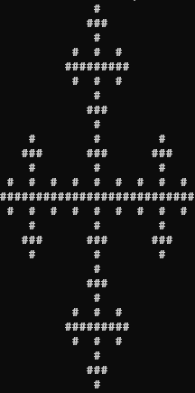

C++ projects
fractalASCII
fractalASCII is a collection of ASCII art fractal generators. So far I've added 3 fractals, but I plan to add more.
It features a Bash menu which brings the individual programs together. Below are some images and details on the fractals implemented:
Sierpiński Triangle
The Sierpiński Triangle is a fractal in the shape of a triangle, further divided into smaller triangles. Here's how my implementation works:

- Input the desired number of iterations n.
- Creates a triangle of height 2 n.
- The central triangle is removed after dividing the triangle into 4.
- Step 3 is now carried out on the other congruent triangles, resulting in more triangles with half the height.
- Step 4 is repeated recursively until further iterations would create triangles of a height lower than 2.
Sierpiński Carpet
Similar to the previous fractal, the Sierpiński Carpet is a fractal in the shape of a square missing the it's center, composed of smaller squares also missing their center. Here's how my version works:
- Input the desired number of iterations n.
- Creates a square of length 3 n.
- A hole of 1⁄3 of the square's area is created in the center of our square.
- In each of the 8 new squares around the hole, new holes are created with 1⁄3 of the original hole's area.
- This is recursively repeated until there are no more holes to create.
Vicsek Fractal
The Vicsek fractal consists of a central shape being recursively surrounded by self similar shapes in 4 cardinal directions.

- Input the desired number of iterations n.
- Fill the grid with characters in the grid of size 3 n.
- The corners of size 1⁄9 of the square's area are removed.
- In each of the 5 remaining squares of area 1⁄9, the same step is repeated recursively until no more corners can be removed.
More soon...